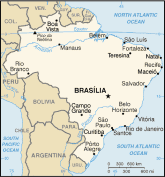

[Voir le carnet de route du Brésil]
Itinéraire prévisionnel :
 Corumba : visite du Pantanal
Corumba : visite du Pantanal
 Campo Grande
Campo Grande
 Chutes d’Iguaçu
Chutes d’Iguaçu

Superficie : 8 511 965 km² (16 fois la France)
Population : 172 millions d’habitants
Capitale : Brasília
Peuples et ethnies : descendants de colons européens (55%), mulâtres (38%), descendants d’esclaves africains (6%)
Langue : portugais
Religion : catholique à 70%
Institutions politiques : république fédérale (26 états)
Principales activités : mines et métallurgie, industrie des transports, agriculture et agro-alimentaire (soja, café, sucre)
Visa : non
Monnaie : Le Real (1€ = 3.7 Real en 2004)
Budget quotidien : 35 à 45 US $/jour.
- Consulat :
34 bis Cours Albert 1er, 75008 Paris.
Tél. : 01 44 13 90 30 . Ouvert de 10h00 à 13h00 et de 14h00 à 16h00.
Consulats à Lyon, Marseille, Nice, Toulouse.
http://www.bresil.org - Librairie et organismes :
- Librairie Lusophone : 22 rue Sommerard, 75005 Paris.
- Le "Brésil en France" : à voir directement sur ce site les coordonnées notamment d’associations franco-brésiliennes.
- Maison de l’Amérique Latine : 217 bd St Germain, 75007 Paris.
Tél. : 01 49 54 75 08.
Ambasssade de France :
| Adresse | Avenida das Naçoès Lote 4 |
| Ville | 70404-900 Brasilia |
| Téléphone | 55 61 312 91 00 |
| Fax | 55 61 312 91 02 |
| URL | http://www.ambafrance.org.br |
Consulat de France à Recife :
| Adresse | Avenue Conselheiro Aguiar n 2333 6em étage Efificio Joao Roma Viagem |
| Ville | Recife |
| Téléphone | 465 32 90 & 465 18 89 |
| Fax | 466 35 99 |
| URL | http://www.consulfrance-recife.org/ |
Consulat de France à Sao Paulo :
| Adresse | 1842 avenida Paulista 14 Andar - CEP 01310 BP 51530 |
| Ville | Sao Paulo |
| Téléphone | 287 95 22 |
| Fax | 283 15 86 & 283 23 61 |
| URL | http://www.consulfrance-saopaulo.org/ |
Consulat de France à Rio de Janeiro :
| Adresse | 58 avenida Presidente Antonio Carlos CEP 20020010 |
| Ville | Rio de Janeiro |
| Téléphone | 210 12 72 |
| Fax | 240 81 92 |
| URL | http://www.consulfrance-rio.org/ |